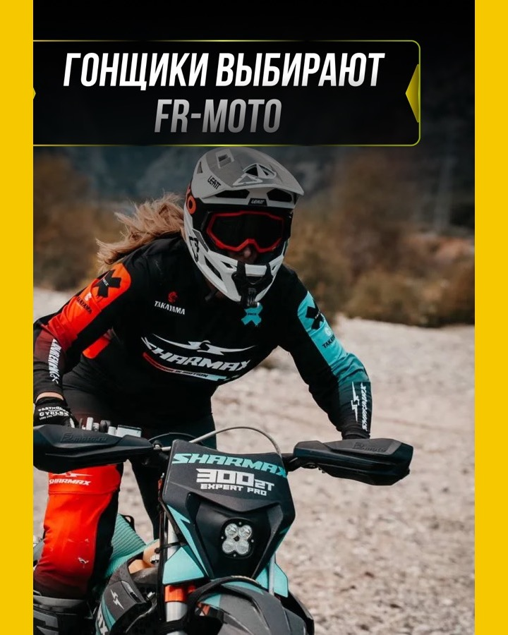

Не выбираем чужой стиль — собираем свой
Один lemonmedia.
Три степени характера.
Сравниваем на одинаковом предложении и реальных работах. Так видно не красивую картинку, а будущую систему сайта.
Капсульное меню
Реальные работы
Manrope
Жёлтое действие
Фиолетовая технология
Разный характер страниц
01 · текущий стиль + дисциплина
Собраннее
Максимально бережно сохраняем нынешнюю главную. Усиливаем только сетку, иерархию и повторяемость блоков.
СпокойноПонятноНадёжно
Контент для
социальных сетей
от 4 990 ₽
Придумываем темы, пишем, оформляем и публикуем — вы только согласовываете.
- 14 дней
- гарантия
- 10 000+
- проектов
- с 2020
- работаем с бизнесом


Публикуем сразу
во всех соцсетях
без доплаты
Один готовый материал адаптируем под каждую площадку и размещаем по графику.
10 постов → до 50 размещений
Контент-план10 материалов готовы


→по графику
Реальный кейс
Не одна обложка,
а весь материал
Открываем темы, тексты, карусели и сторис. Человек видит не обещание, а готовую систему.
Открыть полный кейс →


Кухни и интерьер · август15 публикаций для «Саратов Кухни»5 каруселей · 5 сторис · 5 площадок
Итог направления
Нынешний сайт,
только без дрейфа.
02 · текущий стиль + напор
Характернее
Контрастнее, крупнее и смелее. Меньше мягкого SaaS, больше ощущения сильного самостоятельного бренда.
СмелоКонтрастноУзнаваемо
Регулярный контент · без собственной редакции
Ваши соцсетине должнымолчать.
10 готовых публикаций: темы, тексты, дизайн и выпуск на пяти площадках.
от4 990₽за 10 готовых постов


×5площадок
из одного
материала
из одного
материала
Одна работа команды — пять выходов
Публикуем везде.
Доплаты нет.
Не продаём пять отдельных размещений. Собираем один сильный материал и готовим его к каждой площадке.
VKTelegramInstagramMAXThreads
Не прячем продукт
Работы занимают экран.
Потому что это и есть продукт.


Итог направления
lemonmedia говорит
громко и уверенно.
03 · рекомендуемый синтез
Синтез lemonmedia
Сохраняем воздух и реальные работы текущего сайта, добавляем строгую систему и один сильный фирменный объект на экран.
СистемаХарактерГибкость
Контент для
социальных сетей
от 4 990 ₽
Регулярный выпуск без вечерней работы владельца: тема → текст → дизайн → публикация.
- 14 дней
- на проверку первой партии
- 5 площадок
- без доплаты за количество
- 1 менеджер
- держит весь выпуск
Не функция, а понятный маршрут
Один материал проходит
весь путь до публикации
В каждом продуктовом блоке — одна мысль и один крупный объект, который можно рассмотреть.
- 01Темасвязана с задачей бизнеса
- 02Текстсогласован до дизайна
- 03Визуалсобран в стиле клиента
- 04Адаптацияпод каждую площадку
- 05Выпускпо общему графику
Работа как доказательство
Показываем не обещание.
Показываем месяц целиком.
Каталог, кейс и статья могут отличаться по настроению. Но их держат одна сетка, одна типографика и одинаковые правила доказательства.
Открыть полный кейсКухни и интерьер · август15 публикаций

5 каруселей5 сторис29 дней выпуска
Рекомендуемая основа системы
Узнаваемо.
Но не одинаково.
Главная, работы, кейсы и статьи получают свой характер — без распада общего сайта.Что выбираем глазами
Не обязательно брать вариант целиком
Можно сказать: «первый экран из 03, второй блок из 01, работы из 02». После этого мы соберём один финальный язык и только потом внесём его в систему.